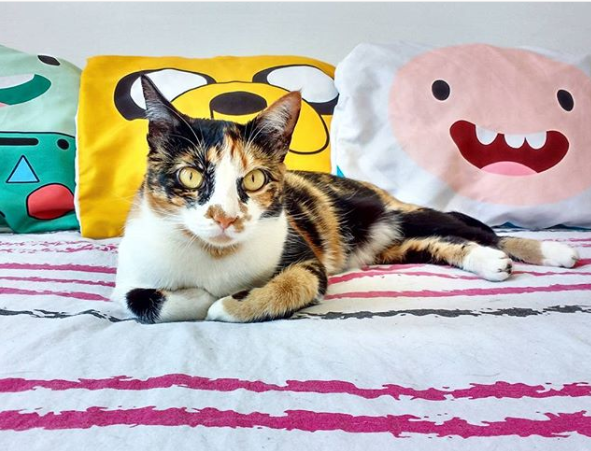
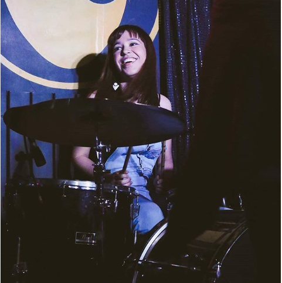
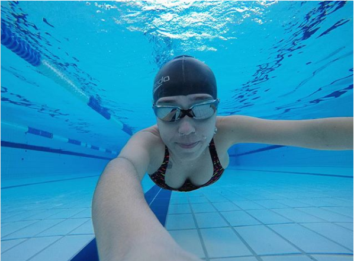
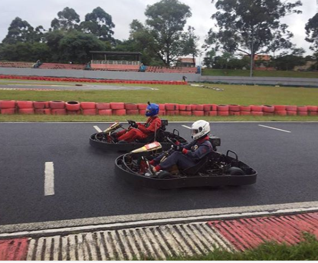
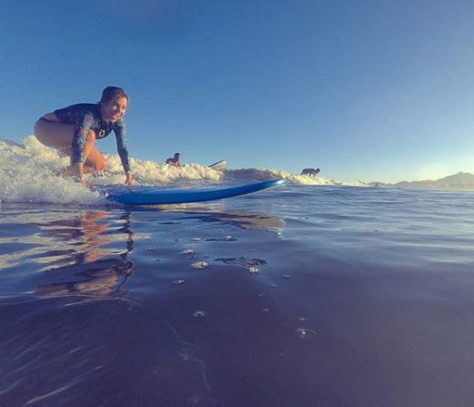
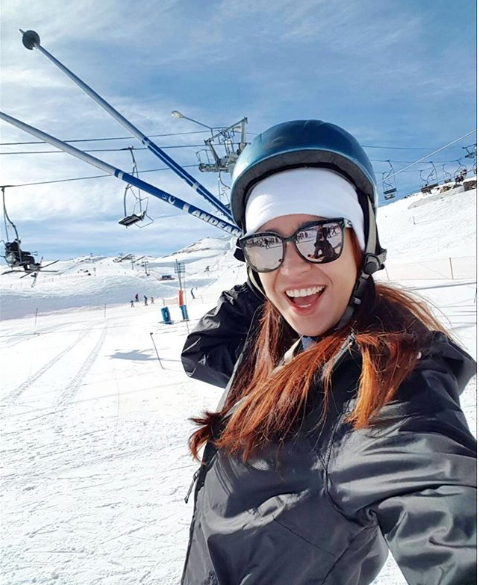

Software developer at GFT, working with java applications since 2018
- Agile methodologies and Scrum
- Java, Spring Boot, JPA, Postman
- Main clients I worked with: GFT, SulAmérica
Production Support Analyst at IBM, for over 2 years.
- Linux
- Oracle and MSSQL database
- SOAPui
- Main Client: Sprint Nextel
I graduated as a geographer at Universidade Federal de São Carlos in 2016, my emphasis being on geoprocessing and GIS.
I'm now a Systems Analysis undergratuate student at Faculdade de Tecnologia de São Paulo (FATEC-SP).

I'm a cat person since 1992.
Now I'm a cat mother who takes a hundred pictures of my cat per day.
I live with this gourgeus kitty named Mimmi, who does not like humans but loves whiskas cat food, tuna fish and chicken eggs even more than I love pizza.
I've been studying music and practicing drums for the last 3 years and I'm in love with it. I like to play rock, but don't be surprised if you find me playing latin music, like reggaeton.
This is me.


I'm also an amateur long distance swimmer. I usually train at heated indoor swimming pools, but enroll on open water championships.
Basically, I practice at swimming pools to compete at dams and lakes.
As you can see I like to practice radical sports, and in 2017 I tryed go karts for the first time. Since then, I developed an interest into autosports and have been attending to all F1 GPs in Brazil. I also have been watching on TV the most FIA Formula E races I can.
I continue to practice at go karts and simulators.


Just like any true swimmer, I like to be as close to the water as I can. So, on weekends, you'll probably find me at the pool or at the sea (if I'm lucky =D).
Naturally, as a geographer, I also enjoy to take some time at the mountains, to practice winter sports and enjoy the view.
